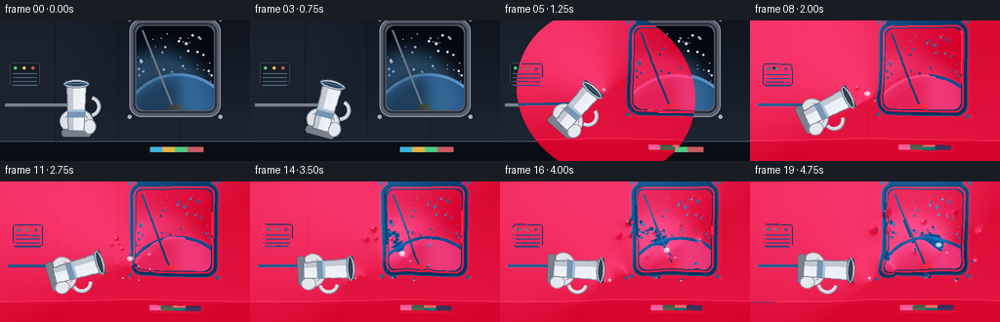
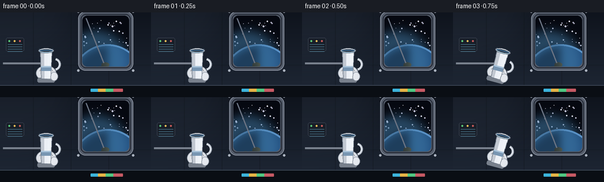

CODING AGENTS AS PIXEL WORLD MODELS
traex/Seed-2.1-Pro-0915 · phygen_001
点击播放 · 原生 RGB 像素
逐轮保存的候选
回放视频、检查图与代码变化。
每份候选均可单独播放。实际图片检查记录在下方工具轨迹中。
候选 01播放与检查图
点击播放 · 原生 RGB 像素


展开代码变化
--- 上一保存版本
+++ 本次保存版本
@@ -0,0 +1,517 @@
+"""Text-to-video: water poured from a cup inside a space station (microgravity).
+
+Procedurally renders 20 RGB frames (256x144 @ 4fps). All geometry, motion and
+shading are generated locally with numpy + PIL only.
+"""
+import math
+import numpy as np
+from PIL import Image, ImageDraw, ImageFilter
+import artifact_io
+
+# ----------------------------------------------------------------------------
+# Setup
+# ----------------------------------------------------------------------------
+rng = np.random.default_rng(21)
+SS = 2 # supersampling factor
+W0, H0 = 256, 144
+W, H = W0 * SS, H0 * SS
+N, FPS = 20, 4.0
+
+TAU = math.tau
+
+
+def clamp(x, a, b):
+ return max(a, min(b, x))
+
+
+def smoothstep(e0, e1, x):
+ x = clamp((x - e0) / (e1 - e0), 0.0, 1.0)
+ return x * x * (3 - 2 * x)
+
+
+# ----------------------------------------------------------------------------
+# Background: space station cabin with a porthole
+# ----------------------------------------------------------------------------
+def make_background():
+ img = Image.new("RGB", (W, H))
+ px = img.load()
+ top = np.array([15, 20, 29], dtype=float)
+ bot = np.array([31, 40, 54], dtype=float)
+ for y in range(H):
+ f = y / H
+ c = tuple((top + (bot - top) * f).astype(np.uint8))
+ for x in range(W):
+ px[x, y] = c
+ d = ImageDraw.Draw(img, "RGBA")
+
+ # Soft glow near the upper-left light source
+ glow = Image.new("L", (W, H), 0)
+ gd = ImageDraw.Draw(glow)
+ gd.ellipse([-W * 0.35, -H * 0.9, W * 0.55, H * 0.55], fill=70)
+ glow = glow.filter(ImageFilter.GaussianBlur(30 * SS))
+ warm = Image.new("RGB", (W, H), (120, 140, 170))
+ img = Image.composite(warm, img, glow.point(lambda v: int(v * 0.35)))
+ d = ImageDraw.Draw(img, "RGBA")
+
+ # Wall panel seams
+ for sx in (0.22, 0.47, 0.72):
+ x = int(W * sx)
+ d.line([(x, 0), (x, H)], fill=(8, 12, 18, 90), width=SS)
+ d.line([(0, int(H * 0.62)), (W, int(H * 0.62))], fill=(8, 12, 18, 70), width=SS)
+
+ # Horizontal hand rail
+ ry = int(H * 0.60)
+ d.line([(int(W * 0.02), ry), (int(W * 0.30), ry)], fill=(150, 158, 170, 200), width=3 * SS)
+ d.line([(int(W * 0.02), ry + 2 * SS), (int(W * 0.30), ry + 2 * SS)],
+ fill=(60, 66, 78, 200), width=SS)
+
+ # Porthole window (frame, space, earth, stars)
+ cx, cy = int(W * 0.70), int(H * 0.34)
+ rw, rh = int(W * 0.155), int(H * 0.30)
+ d.rounded_rectangle([cx - rw - 7 * SS, cy - rh - 7 * SS, cx + rw + 7 * SS, cy + rh + 7 * SS],
+ radius=12 * SS, fill=(86, 94, 108), outline=(150, 158, 172), width=SS)
+ d.rounded_rectangle([cx - rw - 3 * SS, cy - rh - 3 * SS, cx + rw + 3 * SS, cy + rh + 3 * SS],
+ radius=9 * SS, outline=(40, 46, 58), width=2 * SS)
+
+ win = Image.new("RGBA", (W, H), (0, 0, 0, 0))
+ wd = ImageDraw.Draw(win)
+ wd.rounded_rectangle([cx - rw, cy - rh, cx + rw, cy + rh], radius=8 * SS, fill=(5, 8, 16, 255))
+
+ srng = np.random.default_rng(7)
+ for _ in range(70):
+ sx = cx - rw + srng.random() * 2 * rw
+ sy = cy - rh + srng.random() * 2 * rh
+ if ((sx - cx) / rw) ** 2 + ((sy - cy) / rh) ** 2 > 1:
+ continue
+ b = int(120 + 130 * srng.random())
+ s = max(1, int(srng.random() * 1.6 * SS))
+ wd.ellipse([sx - s, sy - s, sx + s, sy + s], fill=(b, b, min(255, b + 20), 255))
+
+ # Earth limb rising at the bottom of the window
+ ex, ey, er = cx + int(rw * 0.1), cy + int(rh * 1.55), int(rh * 1.35)
+ wd.ellipse([ex - er - 3 * SS, ey - er - 3 * SS, ex + er + 3 * SS, ey + er + 3 * SS],
+ fill=(96, 150, 205, 255))
+ wd.ellipse([ex - er, ey - er, ex + er, ey + er], fill=(30, 74, 122, 255))
+ lg = Image.new("L", (W, H), 0)
+ lx, ly = ex - int(er * 0.35), ey - int(er * 0.5)
+ lr = int(er * 0.95)
+ ImageDraw.Draw(lg).ellipse([lx - lr, ly - lr, lx + lr, ly + lr], fill=130)
+ lg = lg.filter(ImageFilter.GaussianBlur(8 * SS))
+ lit = Image.new("RGBA", (W, H), (70, 130, 175, 0))
+ lit.putalpha(lg)
+ win = Image.alpha_composite(win, lit)
+ wd = ImageDraw.Draw(win)
+ for ldx, ldy, lr0 in [(-0.30, -0.28, 0.20), (-0.05, -0.42, 0.13), (0.22, -0.18, 0.16)]:
+ lcx = ex + er * ldx
+ lcy = ey + er * ldy
+ lr1 = er * lr0
+ for k in range(4):
+ ox = (srng.random() - 0.5) * lr1
+ oy = (srng.random() - 0.5) * lr1
+ wd.ellipse([lcx + ox - lr1 * 0.7, lcy + oy - lr1 * 0.5,
+ lcx + ox + lr1 * 0.7, lcy + oy + lr1 * 0.5],
+ fill=(86, 104, 78, 150))
+ sh = Image.new("L", (W, H), 0)
+ sd = ImageDraw.Draw(sh)
+ sd.ellipse([ex - er, ey - er, ex + er, ey + er], fill=0)
+ sd.pieslice([ex - er, ey - er, ex + er, ey + er], 90, 270, fill=110)
+ sh = sh.filter(ImageFilter.GaussianBlur(6 * SS))
+ shade = Image.new("RGBA", (W, H), (4, 8, 18, 0))
+ shade.putalpha(sh)
+ win = Image.alpha_composite(win, shade)
+ wd = ImageDraw.Draw(win)
+ mask = Image.new("L", (W, H), 0)
+ ImageDraw.Draw(mask).rounded_rectangle([cx - rw, cy - rh, cx + rw, cy + rh],
+ radius=8 * SS, fill=255)
+ win.putalpha(Image.composite(win.getchannel("A"), Image.new("L", (W, H), 0), mask))
+ wd.line([(cx - rw + 6 * SS, cy - rh + 4 * SS), (cx - int(rw * 0.1), cy + rh - 6 * SS)],
+ fill=(220, 235, 255, 40), width=2 * SS)
+ img = Image.alpha_composite(img.convert("RGBA"), win).convert("RGB")
+
+ d = ImageDraw.Draw(img)
+ for bx, by in [(cx - rw - 7 * SS, cy - rh - 7 * SS), (cx + rw + 7 * SS, cy - rh - 7 * SS),
+ (cx - rw - 7 * SS, cy + rh + 7 * SS), (cx + rw + 7 * SS, cy + rh + 7 * SS)]:
+ d.ellipse([bx - 2 * SS, by - 2 * SS, bx + 2 * SS, by + 2 * SS], fill=(170, 178, 190))
+
+ # small status panel on the left wall
+ px0, py0 = int(W * 0.04), int(H * 0.30)
+ d.rounded_rectangle([px0, py0, px0 + int(W * 0.12), py0 + int(H * 0.16)],
+ radius=3 * SS, fill=(24, 30, 40), outline=(54, 62, 76), width=SS)
+ led = [(90, 200, 120), (230, 190, 90), (200, 90, 90)]
+ for i, c in enumerate(led):
+ lx = px0 + (4 + i * 9) * SS
+ ly = py0 + 4 * SS
+ d.ellipse([lx, ly, lx + 3 * SS, ly + 3 * SS], fill=c)
+ for i in range(4):
+ yy = py0 + (11 + i * 4) * SS
+ d.line([(px0 + 3 * SS, yy), (px0 + int(W * 0.12) - 3 * SS, yy)],
+ fill=(70, 110, 130), width=SS)
+
+ # lower console band
+ d.rectangle([0, int(H * 0.86), W, H], fill=(10, 14, 20))
+ d.line([(0, int(H * 0.86)), (W, int(H * 0.86))], fill=(70, 80, 96), width=SS)
+ for i, c in enumerate([(60, 180, 220), (230, 180, 70), (80, 200, 130), (200, 90, 100)]):
+ bx = int(W * (0.60 + i * 0.05))
+ d.rounded_rectangle([bx, int(H * 0.90), bx + 16 * SS, int(H * 0.935)],
+ radius=SS, fill=c)
+
+ # faint vignette
+ vig = Image.new("L", (W, H), 0)
+ vd = ImageDraw.Draw(vig)
+ vd.ellipse([-int(W * 0.25), -int(H * 0.45), int(W * 1.25), int(H * 1.45)], fill=120)
+ vig = vig.filter(ImageFilter.GaussianBlur(25 * SS)).point(lambda v: 110 - v)
+ dark = Image.new("RGB", (W, H), (0, 0, 0))
+ img = Image.composite(dark, img, vig.point(lambda v: int(v * 0.5)))
+ return np.asarray(img).copy()
+
+
+# ----------------------------------------------------------------------------
+# Cup + glove, drawn in local upright frame then rotated
+# ----------------------------------------------------------------------------
+PIVOT = (78.0, 90.0) # world pivot of cup, final pixels
+LIP_LOCAL = (12.0, -24.0) # front rim point in cup-local coords
+AXIS_LOCAL = (0.0, -1.0)
+
+
+def rot2(theta, x, y):
+ """Clockwise rotation by theta radians (screen coords, y down)."""
+ c, s = math.cos(theta), math.sin(theta)
+ return x * c - y * s, x * s + y * c
+
+
+def lip_and_axis(theta):
+ lx, ly = rot2(theta, *LIP_LOCAL)
+ ax, ay = rot2(theta, *AXIS_LOCAL)
+ return (PIVOT[0] + lx, PIVOT[1] + ly), (ax, ay)
+
+
+def make_cup_layer(level, theta):
+ LW, LH = 110 * SS, 130 * SS
+ ox, oy = LW // 2, LH // 2 # local origin (pivot)
+
+ def P(x, y):
+ return (ox + x * SS, oy + y * SS)
+
+ lay = Image.new("RGBA", (LW, LH), (0, 0, 0, 0))
+ d = ImageDraw.Draw(lay)
+
+ # spacesuit glove behind the cup
+ gx, gy = P(0, 13)
+ d.ellipse([gx - 17 * SS, gy - 13 * SS, gx + 17 * SS, gy + 13 * SS],
+ fill=(222, 226, 232), outline=(150, 158, 170), width=SS)
+ d.rounded_rectangle([gx - 15 * SS, gy + 8 * SS, gx + 15 * SS, gy + 16 * SS],
+ radius=3 * SS, fill=(120, 128, 140), outline=(80, 88, 100))
+ tx, ty = P(13, 19)
+ d.ellipse([tx - 6 * SS, ty - 8 * SS, tx + 7 * SS, ty + 7 * SS],
+ fill=(228, 232, 238), outline=(150, 158, 170), width=SS)
+ d.arc([gx - 12 * SS, gy - 10 * SS, gx + 12 * SS, gy + 10 * SS],
+ 200, 340, fill=(170, 178, 190, 160), width=SS)
+
+ # handle (behind body)
+ hx, hy = P(14, -2)
+ d.arc([hx - 11 * SS, hy - 11 * SS, hx + 11 * SS, hy + 11 * SS],
+ -75, 75, fill=(214, 220, 228), width=4 * SS)
+ d.arc([hx - 11 * SS, hy - 11 * SS, hx + 11 * SS, hy + 11 * SS],
+ -75, 75, fill=(140, 148, 160), width=SS)
+
+ # cup body (slightly tapered)
+ body = [P(-9.5, -22), P(9.5, -22), P(7.6, 23), P(-7.6, 23)]
+ d.polygon(body, fill=(236, 240, 246, 255))
+ d.line(body + [body[0]], fill=(120, 130, 144), width=SS)
+ sh = Image.new("RGBA", (LW, LH), (0, 0, 0, 0))
+ sd = ImageDraw.Draw(sh)
+ sd.polygon([P(-9.5, -22), P(-3.5, -22), P(-2.6, 23), P(-7.6, 23)],
+ fill=(40, 55, 75, 55))
+ sd.polygon([P(3.5, -22), P(9.5, -22), P(7.6, 23), P(2.6, 23)],
+ fill=(255, 255, 255, 45))
+ lay = Image.alpha_composite(lay, sh)
+ d = ImageDraw.Draw(lay)
+ d.polygon([P(-8.4, 1), P(8.4, 1), P(8.0, 9), P(-8.0, 9)], fill=(120, 150, 178))
+ d.polygon([P(-8.4, 1), P(8.4, 1), P(8.0, 3.4), P(-8.2, 3.4)], fill=(170, 196, 218))
+
+ # rim / opening
+ rx, ry = P(0, -25)
+ rw, rh = 12 * SS, 3.4 * SS
+ d.ellipse([rx - rw - SS, ry - rh - SS, rx + rw + SS, ry + rh + SS],
+ fill=(206, 212, 222), outline=(120, 128, 140), width=SS)
+ d.ellipse([rx - rw, ry - rh, rx + rw, ry + rh], fill=(52, 66, 82))
+ if level > 0.02:
+ frac = clamp(level, 0, 1)
+ wy = ry + rh * (1 - 2 * frac * 0.92)
+ d.pieslice([rx - rw, ry - rh, rx + rw, ry + rh], 0, 360, fill=(64, 120, 168))
+ d.chord([rx - rw, ry - rh, rx + rw, ry + rh], 0, 180, fill=(52, 66, 82))
+ d.rectangle([rx - rw, ry - rh, rx + rw, wy], fill=(52, 66, 82))
+ d.arc([rx - rw, ry - rh, rx + rw, ry + rh], 10, 170,
+ fill=(180, 218, 240), width=max(1, SS // 2 + 1))
+ d.arc([rx - rw, ry - rh, rx + rw, ry + rh], 180, 360,
+ fill=(240, 244, 250), width=SS)
+
+ lay = lay.rotate(-math.degrees(theta), resample=Image.BICUBIC, center=(ox, oy))
+ return lay
+
+
+# ----------------------------------------------------------------------------
+# Water dynamics: scripted blobs -> metaballs
+# ----------------------------------------------------------------------------
+PINCH1, PINCH2 = 2.5, 4.5
+
+
+def theta_at(t):
+ if t < 0.5:
+ return 0.0
+ if t < 1.1:
+ return math.radians(40 * smoothstep(0.5, 1.1, t))
+ if t < 2.5:
+ return math.radians(40 + 32 * smoothstep(1.1, 2.5, t))
+ if t < 4.0:
+ return math.radians(72 + 20 * smoothstep(2.5, 4.0, t))
+ return math.radians(92)
+
+
+_l1, _a1 = lip_and_axis(math.radians(72))
+_pinch1_pos = (_l1[0] + _a1[0] * 27, _l1[1] + _a1[1] * 27)
+_l2, _a2 = lip_and_axis(math.radians(92))
+_pinch2_pos = (_l2[0] + _a2[0] * 17, _l2[1] + _a2[1] * 17)
+
+_droplets = None
+
+
+def _init_droplets(lip, axis):
+ global _droplets
+ _droplets = []
+ for i in range(3):
+ bt = 1.05 + i * 0.18
+ _droplets.append(dict(
+ born=bt, r=1.6 + i * 0.25,
+ p=(lip[0] + axis[0] * 4, lip[1] + axis[1] * 4),
+ v=(axis[0] * (10 + i) + rng.normal(0, 2),
+ axis[1] * (10 + i) - 3 + rng.normal(0, 2))))
+ for i in range(7):
+ ang = i / 7 * TAU + 0.4
+ rr = 14 + rng.random() * 4
+ p0 = (_pinch1_pos[0] + math.cos(ang) * rr,
+ _pinch1_pos[1] + math.sin(ang) * rr)
+ sp = 6 + rng.random() * 9
+ _droplets.append(dict(
+ born=PINCH1, r=1.7 + rng.random() * 1.5, p=p0,
+ v=(math.cos(ang) * sp + 30, math.sin(ang) * sp - 7)))
+
+
+def water_state(t, lip, axis):
+ """Return (balls, specs). Balls: (x, y, rx, ry, ang)."""
+ balls = []
+ specs = []
+
+ def add(x, y, r, ry=None, ang=0.0):
+ balls.append((x, y, r, r if ry is None else ry, ang))
+
+ if t >= 1.0:
+ # ---- main blob B1 ----
+ if t < PINCH1:
+ u = smoothstep(1.0, PINCH1, t)
+ dist = 7 + 20 * u
+ R = 6.0 + 6.5 * smoothstep(1.0, 2.2, t)
+ c = (lip[0] + axis[0] * dist, lip[1] + axis[1] * dist)
+ nseg = max(2, int(dist / 3.2))
+ for i in range(nseg):
+ f = i / nseg
+ base = 3.0 * (1 - f) + R * 0.62 * f
+ bead = 1.0 + 0.22 * math.sin(f * TAU * 2.2 - t * 7.0)
+ add(lip[0] + (c[0] - lip[0]) * f,
+ lip[1] + (c[1] - lip[1]) * f, base * bead)
+ add(c[0], c[1], R, R * (1.0 + 0.10 * math.sin(t * 9)),
+ ang=0.5 * math.sin(t * 6))
+ specs += [(c[0] - R * 0.32, c[1] - R * 0.38, R * 0.26, 0.9),
+ (c[0] + R * 0.30, c[1] + R * 0.22, R * 0.12, 0.35)]
+ else:
+ dt = t - PINCH1
+ c0 = _pinch1_pos
+ c1 = (c0[0] + 30 * dt, c0[1] - 7 * dt)
+ R1 = 12.5
+ wob = 0.16 * math.exp(-dt * 1.4) * math.sin(TAU * 1.7 * dt)
+ ang = 0.4 * math.sin(TAU * 0.55 * dt)
+ add(c1[0], c1[1], R1 * (1 + wob), R1 * (1 - wob), ang=ang)
+ for k in range(3):
+ a2 = ang + k * TAU / 3 + t * 2.2
+ add(c1[0] + math.cos(a2) * R1 * 0.35 * (1 + wob),
+ c1[1] + math.sin(a2) * R1 * 0.35 * (1 - wob), R1 * 0.42)
+ specs += [(c1[0] - R1 * 0.34, c1[1] - R1 * 0.40, R1 * 0.27, 0.95),
+ (c1[0] + R1 * 0.32, c1[1] + R1 * 0.24, R1 * 0.12, 0.35)]
+
+ # ---- second smaller release B2 ----
+ if t >= 3.3:
+ if t < PINCH2:
+ u2 = smoothstep(3.3, PINCH2, t)
+ dist2 = 5 + 12 * u2
+ R2 = 3.0 + 4.5 * u2
+ c2 = (lip[0] + axis[0] * dist2, lip[1] + axis[1] * dist2)
+ nseg = max(2, int(dist2 / 3.0))
+ for i in range(nseg):
+ f = i / nseg
+ base = 2.2 * (1 - f) + R2 * 0.6 * f
+ nr = base * (1 + 0.2 * math.sin(f * TAU * 2 - t * 8))
+ add(lip[0] + (c2[0] - lip[0]) * f,
+ lip[1] + (c2[1] - lip[1]) * f, nr)
+ add(c2[0], c2[1], R2)
+ specs.append((c2[0] - R2 * 0.3, c2[1] - R2 * 0.4, R2 * 0.26, 0.9))
+ else:
+ dt2 = t - PINCH2
+ c20 = _pinch2_pos
+ c2 = (c20[0] + 24 * dt2, c20[1] - 5 * dt2)
+ R2 = 7.5
+ w2 = 0.18 * math.exp(-dt2 * 2.0) * math.sin(TAU * 2.2 * dt2)
+ add(c2[0], c2[1], R2 * (1 + w2), R2 * (1 - w2))
+ specs.append((c2[0] - R2 * 0.32, c2[1] - R2 * 0.42, R2 * 0.26, 0.9))
+
+ if PINCH1 - 0.12 <= t < PINCH1 + 0.3:
+ add(lip[0] + axis[0] * 3, lip[1] + axis[1] * 3, 2.0)
+ if t >= PINCH2 - 0.1:
+ add(lip[0] + axis[0] * 2.5, lip[1] + axis[1] * 2.5,
+ 1.8 + 0.3 * math.sin(t * 10))
+
+ # ---- free droplets ----
+ global _droplets
+ if _droplets is None and t >= 1.05:
+ _init_droplets(lip, axis)
+ if _droplets is not None:
+ for dp in _droplets:
+ if t < dp["born"]:
+ continue
+ dt = t - dp["born"]
+ x = dp["p"][0] + dp["v"][0] * dt
+ y = dp["p"][1] + dp["v"][1] * dt
+ if t >= PINCH1:
+ x += 2.2 * dt
+ add(x, y, dp["r"])
+ if dp["r"] > 2.0:
+ specs.append((x - dp["r"] * 0.3, y - dp["r"] * 0.35, dp["r"] * 0.3, 0.8))
+ return balls, specs
+
+
+# ----------------------------------------------------------------------------
+# Metaball water rendering
+# ----------------------------------------------------------------------------
+GX, GY = np.meshgrid(np.arange(W, dtype=np.float32), np.arange(H, dtype=np.float32))
+TINT = np.array([96, 152, 196], dtype=np.float32)
+RIMC = np.array([196, 226, 252], dtype=np.float32)
+
+
+def render_water(frame, balls, specs):
+ field = np.zeros((H, W), np.float32)
+ gx = np.zeros((H, W), np.float32)
+ gy = np.zeros((H, W), np.float32)
+ for (bx, by, rx, ry, ang) in balls:
+ bx, by, rx, ry = bx * SS, by * SS, rx * SS, ry * SS
+ dx = GX - bx
+ dy = GY - by
+ c, s = math.cos(ang), math.sin(ang)
+ lx = c * dx + s * dy
+ ly = -s * dx + c * dy
+ q = (lx / rx) ** 2 + (ly / ry) ** 2
+ q = np.maximum(q, 0.30)
+ w2 = rx * rx
+ f = w2 / q
+ field += f
+ dlx = -2.0 * w2 * lx / (rx * rx) / q ** 2
+ dly = -2.0 * w2 * ly / (ry * ry) / q ** 2
+ gx += c * dlx - s * dly
+ gy += s * dlx + c * dly
+
+ mask = field > 1.0
+ if not mask.any():
+ return
+
+ # surface normal from the field gradient
+ glen = np.sqrt(gx * gx + gy * gy) + 1e-6
+ nx = -gx / glen
+ ny = -gy / glen
+
+ # key light (upper-left), viewer faces screen
+ lx0, ly0, lz0 = -0.45, -0.62, 0.64
+ ll = math.sqrt(lx0 * lx0 + ly0 * ly0 + lz0 * lz0)
+ lx0, ly0, lz0 = lx0 / ll, ly0 / ll, lz0 / ll
+ # construct normal z from x,y magnitude
+ nxy = np.sqrt(nx * nx + ny * ny)
+ nz = np.sqrt(np.clip(1 - nxy * nxy, 0, 1))
+ diff = np.clip(nx * lx0 + ny * ly0 + nz * lz0, 0, 1)
+ fres = np.clip(1 - nz, 0, 1) ** 1.8
+
+ half = np.clip(nz * lz0, 0, 1)
+ spec = np.clip(0.5 * (nx * lx0 + ny * ly0) + nz * lz0, 0, 1) ** 40
+
+ bgf = frame.astype(np.float32)
+ # refraction: sample the background slightly toward the gradient
+ ox2 = np.rint(nx * 3.0 * SS).astype(np.int32)
+ oy2 = np.rint(ny * 3.0 * SS).astype(np.int32)
+ xs = np.clip(GX.astype(np.int32) + ox2, 0, W - 1)
+ ys = np.clip(GY.astype(np.int32) + oy2, 0, H - 1)
+ refr = bgf[ys, xs]
+
+ body = refr * 0.55 + TINT * (0.30 + 0.35 * diff[..., None])
+ edge = RIMC * fres[..., None]
+ col = body + edge + (255 * spec[..., None])
+ alpha = np.clip(0.55 + 0.45 * diff + 0.5 * fres, 0, 0.94)
+
+ a3 = alpha[..., None]
+ frame[mask] = (bgf[mask] * (1 - a3[mask]) + col[mask] * a3[mask])
+
+ # glints / specular highlights
+ img = Image.fromarray(frame.astype(np.uint8))
+ d = ImageDraw.Draw(img, "RGBA")
+ for (hx, hy, hr, strength) in specs:
+ hx, hy, hr = hx * SS, hy * SS, hr * SS
+ rr = int(max(1, hr))
+ d.ellipse([hx - rr, hy - rr * 0.8, hx + rr, hy + rr * 0.8],
+ fill=(240, 250, 255, int(170 * strength)))
+ d.ellipse([hx - rr * 0.4, hy - rr * 0.4, hx + rr * 0.4, hy + rr * 0.2],
+ fill=(255, 255, 255, int(150 * strength)))
+ frame[:] = np.asarray(img)
+
+
+# ----------------------------------------------------------------------------
+# Composite a frame
+# ----------------------------------------------------------------------------
+def composite(base, t):
+ theta = theta_at(t)
+ lip, axis = lip_and_axis(theta)
+ # water level visible in cup drops as it pours
+ if t < 1.0:
+ level = 0.78 - 0.12 * smoothstep(0.5, 1.0, t)
+ else:
+ level = max(0.18, 0.66 - 0.13 * (t - 1.0))
+ frame = base.copy()
+
+ balls, specs = water_state(t, lip, axis)
+
+ cup = make_cup_layer(level, theta)
+
+ # water emerges from the lip, so render it, then paste the cup and
+ # re-draw the lip-side balls to keep the stream attached in front.
+ render_water(frame, balls, specs)
+
+ cpx = int(PIVOT[0] * SS - cup.size[0] / 2)
+ cpy = int(PIVOT[1] * SS - cup.size[1] / 2)
+ img = Image.fromarray(frame)
+ img.paste(cup, (cpx, cpy), cup)
+ frame = np.asarray(img).copy()
+ return frame
+
+
+def main():
+ background = make_background()
+ frames_hi = []
+ for i in range(N):
+ t = i / FPS
+ f = composite(background, t)
+ frames_hi.append(f)
+ frames = []
+ for f in frames_hi:
+ im = Image.fromarray(f).resize((W0, H0), Image.LANCZOS)
+ frames.append(np.asarray(im))
+ frames = np.stack(frames).astype(np.uint8)
+ artifact_io.save(frames, ".")
+ print("saved", frames.shape)
+
+
+if __name__ == "__main__":
+ main()
可观测工具轨迹
实际执行的命令与返回图片。
命令 1exit 0
/bin/bash -lc 'cat prompt.txt; echo "===RULES==="; cat GENERATION_RULES.md; echo "===SPEC==="; cat task_spec.json; echo "===FILES==="; ls -la'
命令 2exit 0
/bin/bash -lc 'cat artifact_io.py; echo "==="; python3 -c "import numpy, PIL; print(numpy.__version__, PIL.__version__)"'
命令 3exit 0
/bin/bash -lc 'cd . && time python3 generate.py'
保存候选 1 份；完成命令 3 次；可验证图片返回 0 张。原始 API 响应与完整日志保留在本地。